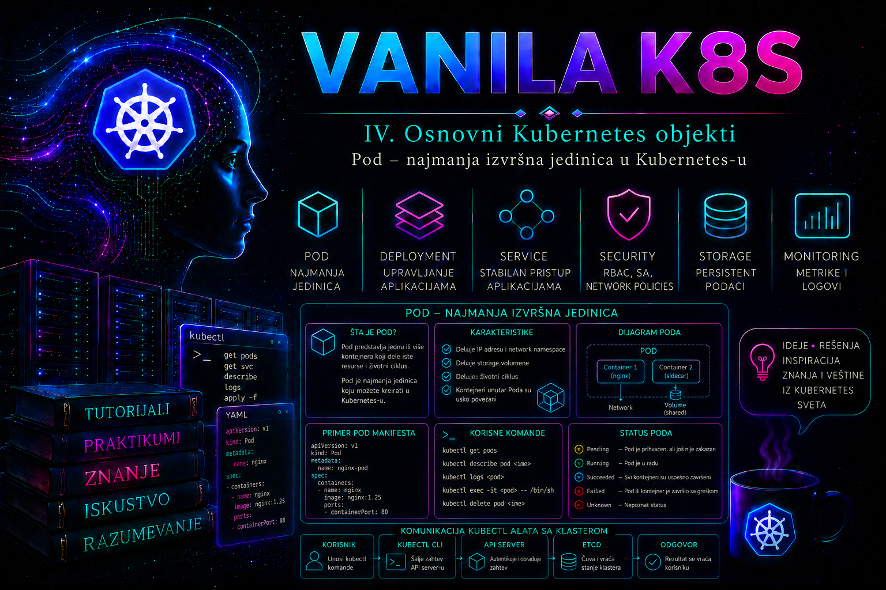

Vanilla Kubernetes

Pod je najmanja izvršna jedinica koju Kubernetes može da rasporedi na radni čvor i kojom može da upravlja kao celinom. Iako se aplikacija fizički izvršava u jednom ili više kontejnera, Kubernetes uobičajeno ne raspoređuje pojedinačan kontejner neposredno. Umesto toga, kontejner postaje deo Pod objekta koji definiše zajednički mrežni prostor, priključene volumene, bezbednosni kontekst, zahteve za resursima, zdravstvene provere i druga pravila izvršavanja. Zbog toga administrator Pod ne treba da posmatra samo kao „omotač oko kontejnera”, već kao operativnu granicu u kojoj Kubernetes izvršava jedan tesno povezan skup procesa.
U jednostavnom slučaju Pod sadrži jedan aplikacioni kontejner. U složenijem slučaju može sadržati glavni kontejner, init kontejnere koji pripremaju okruženje i pomoćne sidecar kontejnere koji pružaju funkciju neposredno povezanu sa aplikacijom. Svi kontejneri u istom Pod-u raspoređuju se na isti čvor, dele životni kontekst Pod-a i mogu da koriste zajedničke volumene. Takva povezanost je korisna samo kada komponente zaista moraju da budu zajedno; nezavisne aplikacije ne treba smeštati u isti Pod radi prividne jednostavnosti.
Pod kao logički host aplikacije
Pod predstavlja aplikacioni „logički host”. Kontejneri unutar njega dele jednu IP adresu Pod-a i isti mrežni namespace. Svaki kontejner može da komunicira sa drugim kontejnerom u istom Pod-u preko adrese localhost, ali portovi moraju biti jedinstveni na nivou Pod-a. Ako glavni kontejner sluša na TCP portu 8080, pomoćni kontejner u istom Pod-u ne može istovremeno da veže isti port na istoj adresi.
Pod dobija IP adresu od mrežnog dodatka klastera, odnosno CNI implementacije. Ta adresa pripada Pod-u, a ne pojedinačnom kontejneru. Kada Pod bude obrisan i napravljen ponovo, novi Pod može dobiti drugu IP adresu. Zbog toga aplikacije ne treba trajno da pamte Pod IP adrese niti da ih koriste kao stabilne identifikatore. Stabilno mrežno otkrivanje obezbeđuje se Kubernetes Service objektom i DNS imenima, dok viši kontroleri, kao što su Deployment, StatefulSet ili DaemonSet, održavaju potreban broj Pod-ova.
Kontejneri u Pod-u mogu da dele podatke preko volumena definisanih u spec.volumes. Svaki kontejner pojedinačno priključuje potreban volumen kroz volumeMounts. Volumen emptyDir postoji tokom života konkretnog Pod-a i može služiti za privremene podatke ili razmenu datoteka između kontejnera. Brisanje Pod-a briše i sadržaj emptyDir volumena. Podaci koji moraju da prežive zamenu Pod-a moraju biti smešteni na trajni volumen ili u odgovarajući spoljašnji servis.
Zašto se produkcioni Pod-ovi ne kreiraju ručno
Kubernetes dozvoljava direktno kreiranje Pod objekta, ali samostalan Pod nema kontroler koji bi ga nadoknadio ako bude obrisan, ako njegov čvor postane nedostupan ili ako je potrebna kontrolisana izmena aplikacije. Kubelet na čvoru može ponovo pokrenuti kontejner unutar postojećeg Pod-a, ali ne može napraviti zamenski Pod na drugom čvoru nakon gubitka originalnog Pod objekta ili čvora.
Produkcione aplikacije se zato uobičajeno ne implementiraju kao samostalni Pod-ovi. Deployment upravlja replikovanim stateless aplikacijama i njihovim kontrolisanim izmenama, StatefulSet aplikacijama kojima su potrebni stabilan identitet i trajno skladište, DaemonSet po jednim Pod-om na odgovarajućim čvorovima, a Job i CronJob poslovima koji treba da se završe. Direktan Pod je prikladan za učenje, ograničeno testiranje, kratkotrajnu proveru i određene dijagnostičke situacije, ali nije zamena za odgovarajući workload kontroler.
Pod specifikacija je velikim delom nepromenljiva nakon kreiranja. Moguće su samo određene izmene pojedinih polja, dok promena slike, volumena, komandi, portova ili većine bezbednosnih postavki tipično zahteva zamenu Pod-a. Kontroler upravo tu zamenu obavlja predvidljivo. Ručna izmena samostalnog Pod-a često završava greškom zbog nepromenljivog polja ili kratkotrajnim stanjem koje sledeća automatizovana implementacija prepisuje.
Struktura Pod manifesta
Pod koristi osnovnu strukturu Kubernetes API objekta: apiVersion, kind, metadata, spec i status koji održava sistem. Za osnovni Pod koristi se API grupa jezgra i vrednost apiVersion: v1. Administrator opisuje željeno stanje u delu spec, dok Kubernetes popunjava status. Status ne treba ručno kopirati u deklarativne manifeste.
| Polje | Administratorska svrha | Važna napomena |
|---|---|---|
metadata.name |
Jedinstveno ime Pod-a u namespace-u | Samostalni Pod zadržava ime, dok kontroleri generišu imena svojih Pod-ova |
metadata.labels |
Selekcija, inventar, Service povezivanje, politike i monitoring | Labela nije samo opis; pogrešna labela može promeniti mrežno ili operativno ponašanje |
spec.containers |
Definicija aplikacionih kontejnera | Lista mora sadržati najmanje jedan kontejner |
image |
Slika iz registra | Za produkciju koristiti kontrolisan registar i nepromenljiv digest kada proces to zahteva |
resources |
CPU i memorijski zahtevi i ograničenja | Utiče na raspoređivanje, kvalitet usluge i ponašanje pri pritisku resursa |
securityContext |
UID, GID, privilegije, capability skup i profil zaštite | Pod i kontejner imaju različite nivoe bezbednosnog konteksta |
restartPolicy |
Politika ponovnog pokretanja kontejnera u Pod-u | Dozvoljene vrednosti su Always, OnFailure i Never |
Kontejnerski port naveden u manifestu prvenstveno dokumentuje nameru i može ga koristiti drugi Kubernetes objekat ili alat. Samo polje containerPort ne otvara port na firewall-u, ne kreira Service i ne čini aplikaciju dostupnom izvan klastera. Administrator mora posebno da razume mrežnu putanju, Service, NetworkPolicy, CNI pravila i eventualni Ingress ili Gateway sloj.
Životni ciklus, faze i stanja kontejnera
Polje status.phase daje sažetu fazu Pod-a: Pending, Running, Succeeded, Failed ili Unknown. Faza nije detaljna dijagnoza. Pod u fazi Pending može čekati raspoređivanje, preuzimanje slike, priključivanje volumena ili izvršavanje init kontejnera. Pod u fazi Running raspoređen je na čvor i najmanje jedan glavni kontejner radi ili se pokreće, ali aplikacija ne mora biti spremna za saobraćaj.
Svaki kontejner ima stanje Waiting, Running ili Terminated. Komanda kubectl describe pod prikazuje razlog čekanja, poslednji završetak, izlazni kod i broj ponovnih pokretanja. Prikaz CrashLoopBackOff nije faza Pod-a, već kubectl prikaz razloga zbog koga kontejner čeka pre sledećeg pokušaja pokretanja. U standardnom ponašanju kubelet koristi eksponencijalni razmak približno 10, 20, 40 sekundi i dalje, do najviše 300 sekundi, a brojač vraća na početak nakon približno deset minuta stabilnog rada kontejnera. Novija izdanja imaju verzijski i feature-gate uslovljene mogućnosti za kraći backoff, zato prikazano vreme ne treba tumačiti bez provere konfiguracije konkretnog klastera. Administrator mora istražiti prvi uzrok, a ne samo čekati novi pokušaj.
Pod uslovi daju precizniji tok od same faze. Najvažniji su PodScheduled, PodReadyToStartContainers, Initialized, ContainersReady i Ready; u novijim izdanjima mogu se pojaviti i uslovi povezani sa prekidom ili promenom resursa. PodReadyToStartContainers potvrđuje da su runtime sandbox i mreža Pod-a pripremljeni, pa pomaže da se zastoj pre pokretanja kontejnera razdvoji od greške slike ili aplikacije. Dodatni readinessGates omogućavaju kontroleru ili integraciji da u spremnost uključi spoljašnji uslov, ali nedostajući uslov tada se smatra netačnim i može opravdano zadržati Pod van Service endpoint-a.
Uobičajeni razlozi problema uključuju ImagePullBackOff, ErrImagePull, CreateContainerConfigError, neuspešno montiranje volumena, nedovoljno resursa za raspoređivanje i prekid zbog prekoračenja memorijskog limita. Kod oznake OOMKilled treba proveriti limit, stvarnu potrošnju, ponašanje aplikacije i metrike čvora. Samo povećavanje limita bez analize može prikriti curenje memorije ili preneti problem na čvor.
Restart politika i ponašanje pri otkazu
restartPolicy važi za aplikacione kontejnere u Pod-u i podrazumevano ima vrednost Always. Politika Always znači da kubelet ponovo pokreće završeni kontejner bez obzira na izlazni kod. OnFailure ga ponovo pokreće kada se završi neuspešno, dok Never ne pokreće završeni kontejner ponovo. Ova politika ne znači da će Kubernetes ponovo kreirati ceo Pod na drugom čvoru.
Za dugotrajne servise kontroler kao Deployment koristi Pod sa politikom Always. Za završive poslove treba koristiti Job, koji koordinira ponavljanje i evidentira uspešan završetak. Samostalni Pod sa OnFailure nije odgovarajuća zamena za Job jer nema njegovu semantiku izvršenja, broj pokušaja, paralelizam i kontrolisano čišćenje.
Init i sidecar kontejneri
Init kontejneri se izvršavaju pre običnih aplikacionih kontejnera. Klasični init kontejner mora uspešno da se završi pre prelaska na sledeći. Pogodni su za proveru zavisnosti, pripremu konfiguracije, postavljanje dozvola nad zajedničkim volumenom ili generisanje datoteka koje glavni kontejner kasnije koristi. Ne treba ih koristiti kao beskonačne procese, niti u njih ugrađivati operacije koje pri svakom ponovnom kreiranju Pod-a nekontrolisano menjaju spoljašnje sisteme.
Kubernetes podržava nativne sidecar kontejnere definisane u spec.initContainers sa kontejnerskom politikom restartPolicy: Always. Mehanizam je stabilan od Kubernetes 1.33, dok je feature gate podrazumevano uključen od 1.29. Kubelet prelazi na sledeći init kontejner kada je sidecar pokrenut, odnosno kada njegova startup provera uspe ako je definisana; readiness provera sidecar-a učestvuje u spremnosti celog Pod-a. Pri gašenju najpre završavaju aplikacioni kontejneri, a zatim sidecar kontejneri obrnutim redosledom od onog u manifestu. Za mešovita ili starija okruženja administrator mora proveriti verziju API servera i čvorova, feature gate i podršku konkretne distribucije pre uvođenja ovog obrasca.
Više običnih kontejnera u spec.containers može takođe formirati pomoćni obrazac, naročito zbog kompatibilnosti sa starijim klasterima, ali ne daje iste garancije redosleda pokretanja i gašenja kao nativni sidecar mehanizam. Nativni sidecar može da se restartuje nezavisno, a kod Job workload-a ne sprečava završetak posla kada se glavni kontejner uspešno završi. Pomoćni kontejner ima smisla samo kada mora da deli mrežu, volumen i sudbinu sa glavnom aplikacijom. Centralni agent koji treba da radi na svakom čvoru često pripada DaemonSet-u, a ne svakom pojedinačnom aplikacionom Pod-u; pogrešno umnožavanje sidecar-a povećava CPU, memoriju, troškove i površinu napada.
Zdravstvene provere i spremnost aplikacije
Kubernetes razlikuje startup, readiness i liveness probe. Startup probe potvrđuje da je aplikacija završila pokretanje. Dok ona ne uspe, liveness i readiness provere se ne izvršavaju. Korisna je za aplikacije sa sporim inicijalnim podizanjem jer sprečava da prerano aktivirana liveness provera izazove beskonačnu petlju ponovnih pokretanja.
Readiness probe odgovara na pitanje da li kontejner trenutno može da prima saobraćaj. Neuspešna readiness provera ne mora da restartuje kontejner, već stanje Ready postaje netačno i odgovarajući Service endpoint prestaje da usmerava saobraćaj ka Pod-u. Liveness probe proverava da li je aplikacija zaglavljena u stanju iz kojeg se može oporaviti restartovanjem kontejnera. Loše osmišljena liveness provera može izazvati prekide potpuno zdrave aplikacije, naročito tokom kratkog zagušenja zavisnog sistema.
Provera treba da meri ono što tvrdi da meri. Liveness endpoint ne treba da zavisi od svake spoljašnje baze, reda poruka ili udaljenog API-ja, jer kvar zavisnosti može izazvati restart svih replika i dodatno pogoršati incident. Readiness provera može biti stroža kada aplikacija bez zavisnosti zaista ne može bezbedno da obradi zahtev. Pragovi, intervali i vremenska ograničenja moraju biti usklađeni sa realnim vremenom odziva i posmatrani kroz metrike, a ne preuzeti iz generičkog primera.
Resursi, raspoređivanje i kvalitet usluge
Zahtev za CPU ili memoriju predstavlja količinu koju scheduler uzima u obzir pri izboru čvora. Limit predstavlja gornju granicu koju runtime i operativni sistem sprovode u skladu sa vrstom resursa i platformom. Prekoračenje memorijskog limita najčešće završava prekidom procesa, dok CPU limit ograničava raspoloživo procesorsko vreme. Vrednosti se određuju na nivou kontejnera, a Kubernetes ih sabira radi procene potreba Pod-a, uz posebna pravila za init kontejnere i novije mogućnosti upravljanja resursima na nivou Pod-a.
Pod bez pravilnih zahteva može biti raspoređen na već opterećen čvor, dok previsoki zahtevi mogu ostaviti Pod u stanju Pending iako bi realna potrošnja bila mala. Prenizak memorijski limit uzrokuje OOMKilled, a prenizak CPU limit povećava latenciju i može oboriti probe. Administrator treba da koristi istorijske metrike, profil opterećenja i kontrolisano testiranje. Vrednosti iz razvojnog okruženja ne treba automatski prenositi u produkciju.
Bezbednosni kontekst Pod-a
Bezbednosni kontekst određuje pod kojim identitetom proces radi i koje privilegije dobija. Bez eksplicitne konfiguracije ponašanje zavisi od sadržaja slike, runtime-a, politika klastera i prijemnih kontrola. Produkcioni Pod treba, kada aplikacija to podržava, da radi kao korisnik bez privilegija, da zabrani eskalaciju privilegija, ukloni nepotrebne Linux capabilities i koristi read-only korenski sistem datoteka. Privilegovani režim, host mreža, host PID prostor, hostPath volumen i dodatne capabilities značajno proširuju posledice kompromitovanja.
Pod Security Standards definišu nivoe privileged, baseline i restricted. Pod Security Admission može ih sprovoditi kroz labele namespace-a. Raniji PodSecurityPolicy objekat uklonjen je iz Kubernetes-a i ne treba ga predstavljati kao aktuelni mehanizam. Pošto restricted politika može odbiti manifest koji nije eksplicitno bezbednosno podešen, administrator treba prvo da koristi režime upozorenja i audita, pregleda rezultate, a zatim planirano ukloni neusaglašenosti pre uključivanja primene.
Brisanje i uredno gašenje Pod-a
Pri redovnom brisanju Pod-a Kubernetes započinje period urednog gašenja, čija je podrazumevana vrednost 30 sekundi ako manifest ne odredi drugačije. Kubelet pokreće odgovarajući preStop hook kada je definisan; vreme njegovog izvršavanja ulazi u isti grace period. Zatim runtime šalje signal za završetak glavnom procesu kontejnera i čeka do isteka terminationGracePeriodSeconds. Ako preStop još traje kada rok istekne, kubelet može zatražiti jednokratno produženje od dve sekunde, ali se na to ne projektuje redovan shutdown. Nakon isteka preostali procesi mogu biti prinudno prekinuti. Aplikacija zato mora pravilno da obrađuje signal za završetak, prestane da prihvata nove zahteve, dovrši ili bezbedno prekine aktivan rad i isprazni baferovane podatke.
Komanda za prinudno brisanje sa nultim grace periodom može ukloniti API objekat bez potvrde da je proces na čvoru zaista prestao. To nosi rizik paralelnog rada stare i nove instance, nedovršenih transakcija i oštećenja podataka. Takva komanda koristi se samo u incidentu, nakon procene stanja čvora i aplikacije, uz zabeleženo odobrenje. Za uobičajeno održavanje treba koristiti kontroler i standardno uredno gašenje.
Integrisani praktikum: bezbedan Pod za internu web-proveru
Enterprise infrastrukturni tim želi da u razvojnom namespace-u potvrdi osnovno ponašanje Pod-a pre uvođenja Deployment objekta. Potrebno je napraviti jednu privremenu web instancu sa init kontejnerom koji priprema sadržaj, ograničenim resursima, zdravstvenim proverama i restriktivnim bezbednosnim kontekstom. Pod nije namenjen produkcionoj visokoj raspoloživosti; cilj je proverljiv tehnički obrazac i uvežbavanje dijagnostike.
Referentno okruženje. Klaster ima Linux radne čvorove, funkcionalan CNI dodatak i pristup javnom registru registry.k8s.io. Koristi se namespace pod-lab, Pod web-check i lokalni fajl pod-lab/web-check-pod.yaml. Kubectl klijent treba da bude u podržanom odstupanju od verzije API servera.
Potrebna prava. Korisniku su potrebna prava za čitanje namespace-a i čvorova, kao i za kreiranje, čitanje, praćenje logova, izvršavanje komandi i brisanje Pod objekata u namespace-u pod-lab. Kreiranje namespace-a može zahtevati posebno klastersko pravo. U produkciji ova ovlašćenja treba dodeliti kroz namenski Role i RoleBinding, a ne kroz široki cluster-admin pristup.
Kriterijumi prihvatanja. Pod mora biti raspoređen, init kontejner mora završiti izlaznim kodom 0, glavni kontejner mora imati stanje Ready, broj restartovanja mora ostati 0 tokom provere, HTTP zahtev mora vratiti tekst Pod web-check radi ispravno., negativni test mora potvrditi da proces ne radi kao UID 0, a cleanup mora ukloniti sve resurse napravljene u praktikumu.
-
Provera konteksta, pristupa i kapaciteta klastera.
Pre promene treba potvrditi da kubectl koristi očekivani klaster, da API server odgovara i da postoji najmanje jedan spreman radni čvor. Provera ovlašćenja sprečava da implementacija bude započeta sa nalogom koji može samo delimično da izvrši scenario.
Validacija: očekuje se tačan naziv konteksta, dostupan control plane i najmanje jedan čvor sa statusomkubectl config current-context kubectl cluster-info kubectl get nodes kubectl auth can-i create namespaces kubectl auth can-i create pods --namespace=pod-lab kubectl auth can-i get pods/log --namespace=pod-lab kubectl auth can-i create pods/exec --namespace=pod-labReady. Proverecan-itreba da vrateyesza radnje koje će korisnik izvršavati. Ako kreiranje namespace-a nije dozvoljeno, namespace mora unapred napraviti ovlašćeni administrator. -
Kreiranje izolovanog namespace-a sa Pod Security pravilima.
Namespace se pravi odvojeno kako laboratorijski objekti ne bi bili pomešani sa aplikacionim resursima. Labele uključuju primenu, audit i upozorenja za
restrictedprofil prema stabilnoj verziji politike, čime se manifest proverava pre prijema.
Validacija: proveriti da namespace postoji i da su sve labele pravilno upisane.kubectl create namespace pod-lab kubectl label namespace pod-lab \ pod-security.kubernetes.io/enforce=restricted \ pod-security.kubernetes.io/enforce-version=latest \ pod-security.kubernetes.io/audit=restricted \ pod-security.kubernetes.io/audit-version=latest \ pod-security.kubernetes.io/warn=restricted \ pod-security.kubernetes.io/warn-version=latest
Rezultat mora prikazati statuskubectl get namespace pod-lab --show-labelsActivei šest postavljenih Pod Security labela. U strogo kontrolisanoj produkciji verzija standarda se može fiksirati na testiranu Kubernetes minor verziju umesto vrednostilatest. -
Priprema lokalnog direktorijuma i manifesta.
Direktorijum služi kao dokumentovani radni prostor promene. Init kontejner upisuje statičku stranicu u
emptyDirvolumen, a nginx kontejner je čita iz istog volumena. Nginx radi kao UID 101, bez dodatnih capabilities i bez mogućnosti eskalacije privilegija. Privremeni direktorijumi koje nginx mora da menja obezbeđeni su posebnimemptyDirvolumenima, dok korenski sistem datoteka ostaje read-only.mkdir -p pod-lab
Manifest sačuvati kaoapiVersion: v1 kind: Pod metadata: name: web-check namespace: pod-lab labels: app.kubernetes.io/name: web-check app.kubernetes.io/component: diagnostics app.kubernetes.io/managed-by: kubectl spec: automountServiceAccountToken: false restartPolicy: Always terminationGracePeriodSeconds: 20 securityContext: runAsNonRoot: true runAsUser: 101 runAsGroup: 101 fsGroup: 101 seccompProfile: type: RuntimeDefault initContainers: - name: prepare-content image: registry.k8s.io/busybox:1.36.1 command: - sh - -c - printf '%s\n' 'Pod web-check radi ispravno.' > /work/index.html securityContext: allowPrivilegeEscalation: false capabilities: drop: - ALL readOnlyRootFilesystem: true resources: requests: cpu: 10m memory: 8Mi limits: cpu: 50m memory: 32Mi volumeMounts: - name: web-content mountPath: /work containers: - name: web image: registry.k8s.io/nginx-slim:0.27 ports: - name: http containerPort: 8080 protocol: TCP securityContext: allowPrivilegeEscalation: false capabilities: drop: - ALL readOnlyRootFilesystem: true resources: requests: cpu: 25m memory: 32Mi limits: cpu: 200m memory: 128Mi startupProbe: httpGet: path: / port: http periodSeconds: 2 failureThreshold: 15 timeoutSeconds: 1 readinessProbe: httpGet: path: / port: http periodSeconds: 5 failureThreshold: 2 timeoutSeconds: 1 livenessProbe: httpGet: path: / port: http initialDelaySeconds: 10 periodSeconds: 10 failureThreshold: 3 timeoutSeconds: 1 volumeMounts: - name: web-content mountPath: /usr/share/nginx/html readOnly: true - name: nginx-cache mountPath: /var/cache/nginx - name: nginx-run mountPath: /var/run volumes: - name: web-content emptyDir: sizeLimit: 16Mi - name: nginx-cache emptyDir: sizeLimit: 32Mi - name: nginx-run emptyDir: sizeLimit: 8Mipod-lab/web-check-pod.yaml. Slike su navedene sa eksplicitnim tagovima radi ponovljivosti laboratorije. U produkciji se preporučuje interna provera slike, skeniranje ranjivosti i upotreba odobrenog digest-a. -
Validacija manifesta pre kreiranja objekta.
Lokalna sintaksna greška ili odbijanje od admission kontrolera treba da budu otkriveni pre stvarne promene. Serverski dry-run šalje zahtev API serveru i uključuje proveru šeme, prijemnih kontrola i bezbednosnih pravila, ali ne čuva objekat.
Validacija: dry-run treba da prikaže da bi Pod bio kreiran, bez poruke o zabrani Pod Security pravila. Pošto objekat još ne postoji,kubectl apply --dry-run=server -f pod-lab/web-check-pod.yaml kubectl diff -f pod-lab/web-check-pod.yamlkubectl diffmože prikazati ceo planirani objekat i završiti izlaznim kodom 1 zato što postoji razlika; to nije greška implementacije. Izlazni kod veći od 1 zahteva analizu. -
Kreiranje Pod-a i praćenje raspoređivanja.
Manifest se primenjuje deklarativno, a zatim se čeka uslov
Ready. Čekanje sa ograničenjem sprečava neodređeno blokiranje administratorske sesije.
Validacija: Pod treba da pređe izkubectl apply -f pod-lab/web-check-pod.yaml kubectl get pod web-check -n pod-lab -o wide kubectl wait --for=condition=Ready pod/web-check -n pod-lab --timeout=120sPendinguRunning, kolonaREADYtreba da bude1/1, a komandawaittreba da potvrdi ispunjen uslov. Ako istekne 120 sekundi, ne ponavljati naslepo komandu, već preći na opis Pod-a i događaje. -
Provera init kontejnera, stanja i događaja.
Detaljan opis pokazuje izabrani čvor, IP adresu, uslove, stanje kontejnera, broj restartovanja i hronološke događaje. JSONPath izdvajanje potvrđuje da se init kontejner završio uspešno.
Validacija: izlazni kod init kontejnera mora bitikubectl describe pod web-check -n pod-lab kubectl get pod web-check -n pod-lab \ -o jsonpath='{.status.initContainerStatuses[0].state.terminated.exitCode}{"\n"}' kubectl get pod web-check -n pod-lab \ -o jsonpath='{.status.containerStatuses[0].ready}{" "}{.status.containerStatuses[0].restartCount}{"\n"}' kubectl get events -n pod-lab --field-selector involvedObject.name=web-check \ --sort-by=.metadata.creationTimestamp0, stanje glavnog kontejneratrue, a broj restartovanja0. Događaji treba da pokažu uspešno raspoređivanje, preuzimanje ili pronalaženje slika, kreiranje i pokretanje oba kontejnera. PorukeFailedScheduling,FailedMountiliBackOffzahtevaju reakciju. -
Provera logova oba kontejnera.
Log init kontejnera je važan kada Pod ostane u fazi inicijalizacije, dok log glavnog kontejnera pokazuje greške aplikacije i pristupne zahteve. Kubernetes standardno preuzima izlaz procesa sa standardnog izlaza i standardnog toka grešaka preko container runtime-a.
Validacija: init kontejner u ovom primeru ne mora dati izlaz jer samo upisuje datoteku. Nginx log ne treba da sadrži fatalnu grešku pri pokretanju. Nakon funkcionalnog testa treba da se pojavi HTTP pristup. Ako je kontejner prethodno restartovan, prethodni izlaz proverava se komandomkubectl logs web-check -n pod-lab -c prepare-content kubectl logs web-check -n pod-lab -c web --tail=50 kubectl logs web-check -n pod-lab -c web --timestamps --since=10mkubectl logs web-check -n pod-lab -c web --previous. -
Završna funkcionalna provera preko kontrolisanog port-forward tunela.
Pod još nema Service, pa se za administrativnu proveru koristi privremeni tunel od lokalnog porta 18080 do porta 8080 u Pod-u. Port-forward nije produkcioni način objavljivanja servisa.
U drugom terminalu izvršiti:kubectl port-forward -n pod-lab pod/web-check 18080:8080
Validacija: curl mora vratiti tačnocurl --fail --silent --show-error http://127.0.0.1:18080/ kubectl logs web-check -n pod-lab -c web --tail=10Pod web-check radi ispravno.i završiti izlaznim kodom 0. U nginx logu treba da postoji uspešan zahtev sa HTTP statusom 200. Port-forward se završava kombinacijomCtrl+Cu prvom terminalu. -
Negativni bezbednosni test.
Cilj je potvrditi da glavni proces ne radi kao root i da korenski sistem datoteka nije upisiv. Test se obavlja samo u ovom namenskom Pod-u.
Validacija: komandakubectl exec -n pod-lab web-check -c web -- id kubectl exec -n pod-lab web-check -c web -- sh -c 'touch /root/forbidden-test'idtreba da prikaže UID i GID 101, a pokušaj upisa pod/rootmora biti odbijen porukom o read-only sistemu datoteka ili nedovoljnoj dozvoli. Uspešan upis predstavlja neusaglašenost manifesta, slike ili runtime ponašanja i zahteva prekid prihvatanja rešenja. -
Dijagnostički negativni test bez izmene aplikacije.
Traži se nepostojeća putanja da bi se proverilo razlikovanje infrastrukturnog problema od očekivanog aplikacionog HTTP odgovora.
U drugom terminalu:kubectl port-forward -n pod-lab pod/web-check 18080:8080
Validacija: očekuje se HTTP statuscurl --silent --output /dev/null --write-out '%{http_code}\n' \ http://127.0.0.1:18080/ne-postoji kubectl get pod web-check -n pod-lab kubectl logs web-check -n pod-lab -c web --tail=10404, dok Pod mora ostatiRunningiReady. Ovaj rezultat pokazuje da su mrežna putanja i web proces funkcionalni, ali traženi resurs ne postoji. Status 404 nije isto što i neuspešan port-forward, timeout ili odbijena konekcija. -
Dokumentovanje konačnog stanja.
Pre cleanup-a čuvaju se deklaracija i sažeti operativni dokazi. Ne treba arhivirati ceo Pod status kao budući manifest, ali je koristan kao evidencija testa i pomoć pri analizi.
Validacija: četiri datoteke treba da postoje i da ne budu prazne, osim što log može biti mali ako nije bilo mnogo zahteva.kubectl get pod web-check -n pod-lab -o yaml > pod-lab/web-check-observed.yaml kubectl describe pod web-check -n pod-lab > pod-lab/web-check-describe.txt kubectl get events -n pod-lab --sort-by=.metadata.creationTimestamp \ > pod-lab/web-check-events.txt kubectl logs web-check -n pod-lab -c web --timestamps \ > pod-lab/web-check-web.log
Evidenciju povezati sa zahtevom za promenu, laboratorijskim zapisnikom ili repozitorijumom infrastrukture, uz datum, kontekst klastera, izvršioca, rezultat i sva odstupanja.ls -lh pod-lab/ grep -E 'Ready|Started|Scheduled' pod-lab/web-check-describe.txt -
Cleanup i povratak na početno stanje.
Brisanje namespace-a uklanja sve objekte u njemu i zato je destruktivno. Pre komande treba potvrditi da namespace sadrži isključivo resurse ovog praktikuma.
Validacija: Pod treba uredno da nestane, a namespace nakon završetka brisanja više ne sme biti pronađen.kubectl get all -n pod-lab kubectl delete -f pod-lab/web-check-pod.yaml kubectl wait --for=delete pod/web-check -n pod-lab --timeout=60s kubectl delete namespace pod-lab
Očekuje se porukakubectl get namespace pod-labNotFound. Lokalni direktorijum se ne briše automatski jer predstavlja dokumentaciju testa. Njegovo uklanjanje obavlja se tek nakon arhiviranja potrebnih dokaza.
Razlikovanje tipičnih problema
| Simptom | Prva provera | Verovatna oblast problema |
|---|---|---|
Pod dugo ostaje Pending |
kubectl describe pod i događaji |
Nedovoljni resursi, taint, affinity, volumen ili scheduler |
ImagePullBackOff |
Naziv slike, događaji i pristup registru | Pogrešan tag, autentikacija, DNS, TLS ili mreža registra |
CrashLoopBackOff |
Aktuelni i --previous log, izlazni kod |
Greška aplikacije, konfiguracija, dozvole ili neuspešna liveness provera |
Pod je Running, ali nije Ready |
Readiness probe, događaji i aplikacioni log | Aplikacija još nije spremna ili zavisnost nije dostupna |
OOMKilled |
Poslednje stanje kontejnera i memorijske metrike | Prenizak limit, nagli skok ili curenje memorije |
| Port-forward radi, ali HTTP vraća 404 | Putanja zahteva i web log | Mreža radi; problem je aplikacioni sadržaj ili ruta |
| Admission odbija Pod | Celokupna poruka API servera | Pod Security, politika slike, kvota ili druga admission kontrola |
Administratorske prakse
- Praćenje spremnosti i restartovanja. Posle implementacije, promene slike, konfiguracije ili čvora proveravaju se
kubectl get pods -o wide, uslovi Pod-a irestartCount. Svaki neočekivani restart, produženo stanjeNotReadyili rast restartovanja zahteva pregled događaja, prethodnog loga i razloga poslednjeg završetka. U produkciji se ove vrednosti prate metrikama i alarmima. Dokumentuju se vreme, Pod UID, čvor, izlazni kod i uzrok. Uspešna praksa meri se vremenom otkrivanja i udelom incidenata kod kojih je uzrok utvrđen iz sačuvanih podataka. - Kontrola zahteva i limita. Nakon testiranja opterećenja, promene verzije aplikacije i periodično prema ciklusu kapaciteta analiziraju se CPU, memorija, throttling, OOM događaji i stvarna radna opterećenja. Reakciju zahtevaju ponavljani OOM prekidi, dugotrajna potrošnja blizu limita, ozbiljan CPU throttling ili veliki raskorak između zahteva i realne potrošnje. Prva reakcija je potvrda da problem potiče od aplikacije, limita ili čvora, a ne automatsko povećanje vrednosti. Odluke i pre/posle metrike čuvaju se uz manifest i zahtev za promenu.
- Provera bezbednosnog položaja. Svaka nova aplikacija i svaka promena slike proveravaju se serverskim dry-run postupkom, Pod Security upozorenjima, politikama registra i skenerom slika. Privilegovani režim, root identitet, host namespace, hostPath i dodatne capabilities zahtevaju eksplicitno obrazloženje i bezbednosno odobrenje. Prva reakcija je odbijanje implementacije dok se ne utvrdi najmanji potreban skup privilegija. Uspeh se meri procentom workload-a usaglašenih sa odabranim profilom i brojem vremenski ograničenih izuzetaka.
- Standardizacija logova. Aplikacije treba da pišu operativne logove na standardni izlaz i standardni tok grešaka, dok se trajno zadržavanje obezbeđuje klasterskim sistemom za prikupljanje logova.
kubectl logsnije arhiva i lokalni log može nestati gubitkom Pod-a ili čvora. Nakon incidenta proveravaju se aktuelni i prethodni kontejnerski log, aplikacioni korelacioni identifikator i centralni zapis. Uspeh se meri mogućnošću rekonstrukcije događaja u definisanom periodu zadržavanja. - Upravljanje direktnim Pod-ovima. Periodično se inventarišu Pod-ovi bez vlasničke reference pomoću strukturisanog API izlaza ili alata za upravljanje klasterom. Svaki dugotrajni samostalni Pod u produkciji zahteva proveru poslovnog vlasnika i razloga zbog kog nije pod kontrolerom. Prva reakcija je plan migracije na odgovarajući Deployment, StatefulSet, DaemonSet ili Job. Rezultat se meri smanjenjem broja nedokumentovanih samostalnih Pod-ova.
- Čuvanje deklarativne konfiguracije. Backup pojedinačnog Pod-a nije primarna strategija oporavka aplikacije. Čuvaju se izvorni manifesti, Helm ili Kustomize konfiguracija, politike, podaci o verziji slike i povezani objekti u kontrolisanom repozitorijumu. Za stateful aplikacije zasebno se čuvaju podaci trajnih volumena i spoljašnjih baza prema njihovoj tehnologiji. Integritet se proverava revizijom, potpisima ili hash vrednostima, a probni restore mora dokazati da se workload može ponovo kreirati u izolovanom okruženju i proći funkcionalne testove. Sam YAML eksport živog Pod-a bez zavisnosti i podataka nije potpun backup.
Kontrolna lista
- Potvrđen je očekivani kubectl kontekst i najmanje jedan radni čvor ima status
Ready. - Serverski dry-run prihvata manifest bez greške šeme, admission politike ili Pod Security pravila.
- Pod ima odgovarajuće labele, kontrolisan izvor slike i dokumentovanu namenu.
- Za svaki kontejner definisani su merljivi CPU i memorijski zahtevi i limiti.
- Proces radi kao korisnik bez privilegija, eskalacija je zabranjena, capabilities su ograničene i primenjen je
RuntimeDefaultseccomp profil. - Startup, readiness i liveness provere mere različite i tehnički opravdane uslove.
- Init kontejneri završavaju izlaznim kodom 0, glavni kontejneri su
Ready, a neočekivani restartovi ne postoje. kubectl describe, događaji i aktuelni ili prethodni logovi ne pokazuju neuspešno raspoređivanje, montiranje, preuzimanje slike ili pokretanje.- Funkcionalni zahtev vraća očekivani sadržaj i HTTP status, a negativni test daje unapred definisan neuspeh.
- Manifest, rezultat provere, verzije slika, izvršilac i odstupanja evidentirani su u kontrolisanom repozitorijumu ili sistemu promena.
- Za dugotrajnu produkcionu aplikaciju izabran je odgovarajući workload kontroler umesto samostalnog Pod-a.
- Cleanup je proveren komandom za čitanje API resursa, bez prinudnog brisanja osim kada postoji dokumentovana incidentna potreba.
Zaključak
Administrator nakon ove lekcije treba da razume da je Pod granica zajedničkog izvršavanja, a ne trajni server niti stabilan mrežni identitet. Treba da ume da poveže kontejnerska stanja, Pod faze, uslove spremnosti, događaje, logove, resurse, bezbednosni kontekst i ponašanje kubelet-a u jednu dijagnostičku sliku. Status Running nije dovoljan dokaz ispravnosti, restart nije uvek oporavak, a uspešno kreiran API objekat nije isto što i funkcionalna aplikacija.
Praktična administratorska veština obuhvata bezbedno sastavljanje i validaciju manifesta, proveru ovlašćenja, praćenje inicijalizacije, tumačenje zdravstvenih provera, kontrolu resursa, pregled aktuelnih i prethodnih logova, izvođenje pozitivnih i negativnih testova i uredno uklanjanje laboratorijskog objekta. Promena mora biti proverena pre primene, merena nakon primene i dokumentovana tako da drugi administrator može rekonstruisati nameru, postupak i rezultat.
Granica Pod tehnologije postaje vidljiva kada je potrebna raspoloživost, skaliranje, kontrolisani rollout, stabilan identitet, završivi posao ili rad na svakom čvoru. Tada odgovornost prelazi na odgovarajući workload kontroler i povezane objekte. Zahtevi za privilegovanim režimom, host pristupom, prinudnim brisanjem, izuzecima od bezbednosnih politika ili nekontrolisanim povećanjem resursa predstavljaju razlog za bezbednosnu, aplikacionu ili infrastrukturnu eskalaciju. Administrator nije odgovoran samo da Pod „pokrene”, već da obezbedi proverljivo, ograničeno, ponovljivo i operativno opravdano izvršavanje.